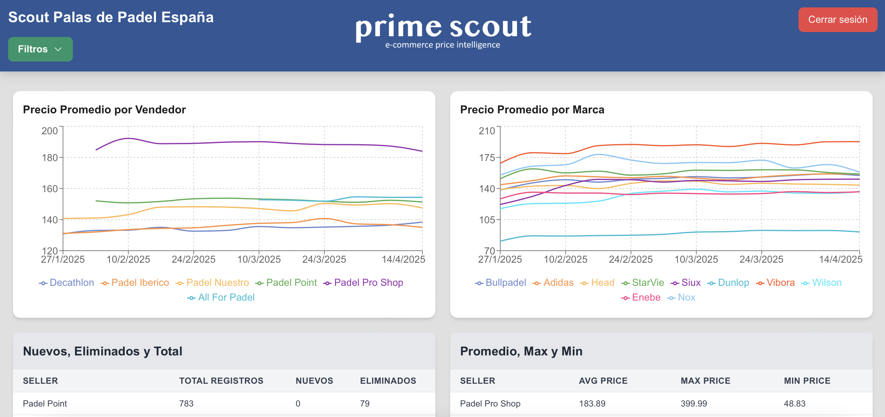
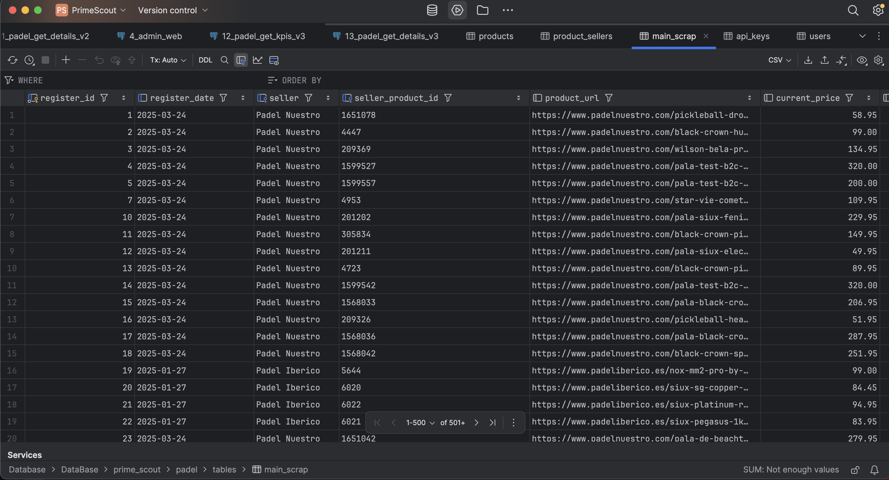
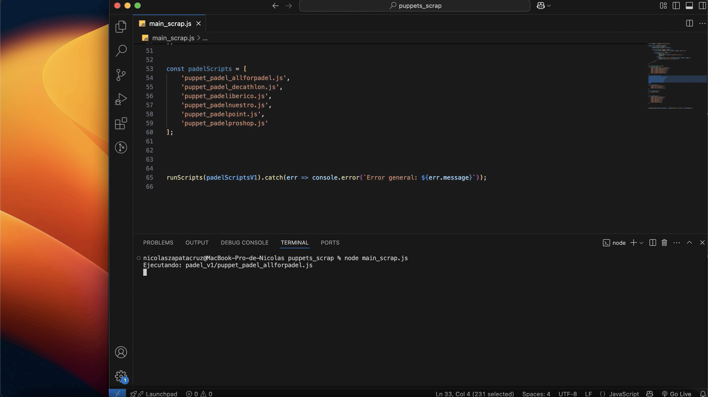
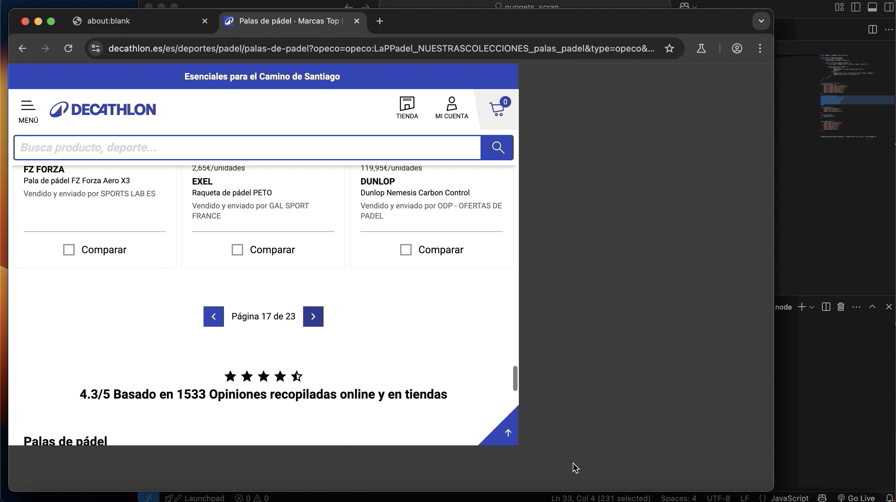
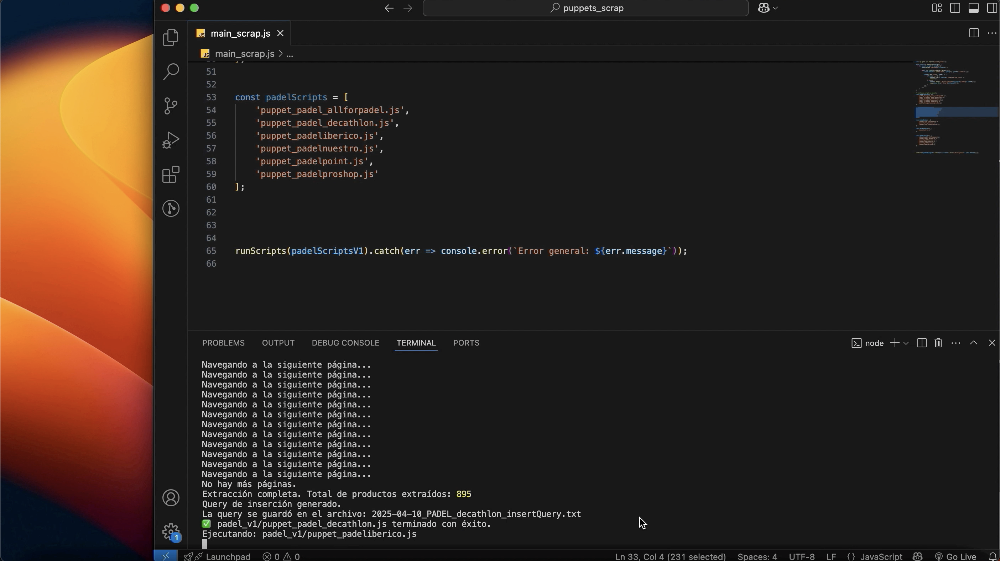

A startup tracking competitor prices — manually.
Prime Scout is a price intelligence startup that helps e-commerce businesses monitor how their products are priced across competitor stores. When I joined as CTO in December 2024, the entire process was manual: someone would visit competitor sites, note down prices, and compile reports by hand. It was slow, error-prone, and didn't scale.
The goal was clear: build a system that does this automatically, reliably, and presents the data in a way that lets clients make pricing decisions in real time — not days later.
Manual processes don't scale. And they miss things.
Beyond the obvious speed issue, manual scouting had a deeper problem: inconsistency. Different people checked different stores at different times. Prices would change between the moment someone checked and the moment the report landed in a client's inbox. And there was no structured way to compare products across stores — everything lived in spreadsheets.
The core challenge: each competitor's e-commerce site has a different structure — different HTML, different anti-scraping protections, different product naming conventions. A solution that works on one store might break completely on another.
From zero to a working platform in one version.
I was responsible for the entire technical architecture — from the scraping bot to the dashboard the client sees. Here's how the build progressed:
Started by understanding how competitor stores were structured and running manual scraping sessions to validate which data was accessible and where it lived in the DOM.
Built and tested Puppeteer scripts for each target store, adapting the scraping logic to each site's structure and implementing error handling and retries for reliability.
Designed a PostgreSQL schema on AWS RDS to store extracted product data in a way that allows efficient cross-store comparison — structured around products, stores, and price snapshots over time.
Built the full web application with Next.js: the API routes that run and schedule the scraper, and the frontend dashboard where clients log in, select their products, and visualize competitive pricing data.
Designed the dashboard interface myself — thinking through how to display pricing comparisons in a way that surfaces actionable information at a glance, not just raw data tables.
A platform that replaced the spreadsheet entirely.
Version 1.0 shipped with 90% of the scouting process fully automated. Clients can now log in and see real-time price comparisons across competitor stores — updated automatically, without anyone lifting a finger.

The main dashboard — clients can see how their products compare across competitor stores in real time.
The database was designed to store historical price data, not just the current state — so clients can also track how a competitor's pricing has evolved over time.

Database schema — designed for efficient cross-store product comparison and historical price tracking.
The scraping system.
The bot runs Puppeteer scripts adapted to each e-commerce site's specific structure. Each script handles the store's navigation, product identification, price extraction, and data normalization before writing to the database.



Puppeteer scripts adapted to three different e-commerce store structures.
The hardest part wasn't writing the scraper — it was making it resilient. Stores change their HTML. Anti-bot protections kick in. Products go out of stock and their URLs disappear. Every edge case needed a fallback so the system keeps running without manual intervention.
What I learned building this alone.
This was the first time I owned an entire technical stack from scratch — not just the frontend, not just the design, but every layer of the system. That changes how you make decisions. When you're the one who has to maintain it, you think harder about architecture before you write the first line.
The most valuable lesson was about the gap between "it works" and "it's reliable". The scraper worked on day one. Making it resilient enough that it didn't need babysitting — that took much longer. Reliability isn't a feature you add at the end.
Designing the dashboard also taught me something I hadn't expected: data visualization is a UX problem. The same price data presented poorly is useless. Presented well, it becomes a decision-making tool. That overlap between data and design is something I want to keep exploring.